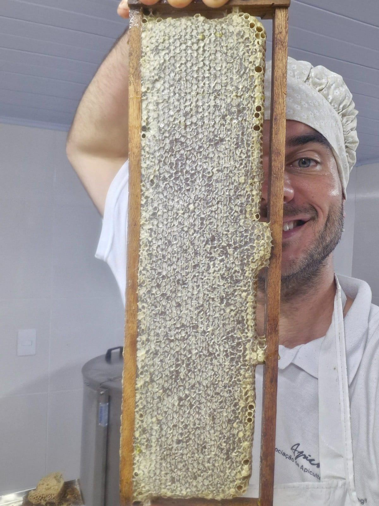

Nossa história
Catorze hectares de Mata Atlântica que escolhemos cuidar, na Estrada Rio do Júlio.
Tudo começou com uma decisão simples: deixar a floresta voltar. Desde 2015, cuidamos desta terra como quem cuida de casa — regenerando a mata, criando abelhas e abrindo a porteira para quem também quer reconectar com a natureza.

Alexandre Reichel
Agrônomo, apicultor e o par de mãos por trás da Curi. Há mais de uma década dedica os dias a regenerar floresta e a entender o tempo das abelhas e das aves. Além dos projetos aqui, também atuou em regiões como a Caatinga, no Ceará, adaptando sistemas agroflorestais a diferentes realidades.
hectares de Mata Atlântica sob cuidado
espécies de aves já registradas
o ano em que abrimos a porteira
anos de manejo agroecológico
Do começo até hoje
Abrimos a porteira
Assumimos os 14 hectares e tomamos a decisão de deixar a floresta se regenerar, no seu próprio tempo.
As primeiras colmeias
Instalamos o apiário em meio à mata recuperada e começamos a colher nosso mel silvestre.
A casa ganhou hóspedes
Abrimos a hospedagem no Airbnb — gente da cidade acordando com o canto dos pássaros.
Mais de 220 aves
A mata respondeu: hoje registramos mais de 220 espécies de aves e seguimos plantando floresta.
Quatro frentes, uma floresta
Apicultura agroecológica
Mel, própolis e cera da nossa mata, sem agrotóxicos.
Recuperação ambiental
Regeneramos a Mata Atlântica plantando e protegendo nascentes.
Observação de aves
Trilhas e registros de uma das faunas mais ricas da região.
Educação e consultoria
Compartilhamos o que aprendemos com escolas e projetos.
Soltura de animais silvestres
A Curi é área parceira na soltura de animais silvestres reabilitados, em conjunto com o CETAS, o IBAMA e o IMA. Aves e outros animais recuperados voltam para a mata daqui — a floresta que regeneramos passa a ser casa de novo. É o mesmo compromisso que sustenta tudo o que fazemos: recuperar o ambiente para que a vida volte por conta própria.
Acreditamos que cuidar de um pedaço de mata é também cuidar de quem visita. A natureza faz o resto.
— nós, da Curi
Venha conhecer pessoalmente
A porteira está aberta para visitas, vivências e hospedagem.